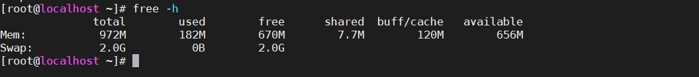

交换分区的查看与创建
交换分区就是虚拟内存，交换分区会在内存资源全部被占用后，启用充当内存的作用。

交换分区的创建
增加交换分区的大小
向挂载普通磁盘一样，进行操作
分区创建swap
[root@localhost ~]# fdisk /dev/sdb
欢迎使用 fdisk (util-linux 2.23.2)。
更改将停留在内存中，直到您决定将更改写入磁盘。
使用写入命令前请三思。
命令(输入 m 获取帮助)：n
Partition type:
p primary (0 primary, 0 extended, 4 free)
e extended
Select (default p):
Using default response p
分区号 (1-4，默认 1)：1\
分区号 (1-4，默认 1)：
起始 扇区 (2048-10485759，默认为 2048)：
将使用默认值 2048
Last 扇区, +扇区 or +size{K,M,G} (2048-10485759，默认为 10485759)：+1G
分区 1 已设置为 Linux 类型，大小设为 1 GiB
命令(输入 m 获取帮助)：w
The partition table has been altered!
Calling ioctl() to re-read partition table.
正在同步磁盘。
为分区安装swap“文件系统”
[root@localhost ~]# mkswap /dev/sdb1
mkswap: /dev/sdb1: warning: wiping old ext4 signature.
正在设置交换空间版本 1，大小 = 1048572 KiB
无标签，UUID=e896cdd8-2aaa-418e-933d-995c2c184439
打开swap
[root@localhost ~]# free -m
total used free shared buff/cache available
Mem: 972 186 664 7 121 651
Swap: 3071 0 3071